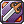

Attack
In Renewal, the attack formula was completely reworked and modified to take more advantage of weapons, their levels, and their relations to the class the player is currently using. This page will go into detail how everything affects your final attack value.
After calculating your Final Attack Value, you can enter it into the Final Damage Formula.
Status Attack
This is derived from the your Base Level, Str, Dex and Luk. This is always considered as Neutral property unless you use the  Warm Wind skill.
Warm Wind skill.
StatusATK is not affected by card modifiers such as ATK%, Size%, Race%, but is affected by damage modifiers such as Critical Damage%, Ranged%, Melee%.
Formula:
StatusATK = floor[(BaseLevel ÷ 4) + Str + (Dex ÷ 5) + (Luk ÷ 3) + bonusStatusATK) × PropertyModifier]
Formula when using a Bow, Whip, Instrument, or Gun class weapon:
StatusATK = floor[(BaseLevel ÷ 4) + (Str ÷ 5) + Dex + (Luk ÷ 3) + bonusStatusATK) × PropertyModifier]
- bonusStatusATK comes from some consumable items such as
 Gin Limited Power Booster, and Distilled Fighting Spirit.
Gin Limited Power Booster, and Distilled Fighting Spirit. - PropertyModifier is determined based on the property of the attack, think Holy property attack against an Undead enemy. This bonus is ONLY added to StatusATK if the Warm Wind skill is used.
Weapon attack
This is derived from your currently equipped Weapon, and Str or Dex depending on your weapon type. Variance, StatBonus, and OverUpgradeBonus are not shown in the Status Window.
WeaponATK is affected by card modifiers such as ATK%, Size%, and Race%. As well as damage modifiers such as Critical Damage%, Ranged%, and Melee%.
WeaponATK = floor[((BaseWeaponATK + Variance + StatBonus + RefineBonus + OverUpgradeBonus) × SizePenalty]
BaseWeaponATK
This is the ATK value listed on your weapons description
Variance
Variance = +/- 0.05 × WeaponLevel × BaseWeaponATK
A level 4 weapon have a 0.05 × 4 = 20% variance. This means a level 4 weapon can do 20% less or 20% more than its BaseWeaponATK. For a weapon with 100 BaseWeaponATK, this translate to 20% × 100 = 20 ATK variance. So for each hit, your BaseWeaponATK value will be between 80 and 120.  Maximize Power, or a Critical Hit will set the damage variance to the highest amount possible, so each hit will consider your BaseWeaponATK to be 120.
Maximize Power, or a Critical Hit will set the damage variance to the highest amount possible, so each hit will consider your BaseWeaponATK to be 120.
StatBonus
StatBonus = BaseWeaponATK × Str ÷ 200
This effectively adds +0.5% BaseWeaponATK for every 1 Str you have, including bonus Str.
StatBonus when using a Bow, Whip, Instrument, or Gun class weapon
StatBonus = BaseWeaponATK × Dex ÷ 200
This effectively adds +0.5% BaseWeaponATK for every 1 Dex you have, including bonus Dex.
RefineBonus
Check Refinement System for more information
This is a static ATK value and is shown in the status window.
OverUpgradeBonus
Check Refinement System for more information
This is a randomized ATK value and is not shown in the status window. This variance is removed if you deal a Critical Hit, in which case it will use the maximum ATK value.
SizePenalty
Check Size Penalty for more information
This is the penalty your weapon has against certain sizes of enemies.
This is the full formula including modifiers:
WeaponATK = floor[floor[floor[((BaseWeaponATK + Variance + StatBonus + RefineBonus + OverUpgradeBonus) × SizePenalty] × CardFix] x CardfixReduction]
Extra attack
This refers to sum of EquipATK, ConsumableATK, AmmunitionATK and PseudoBuffATK. While Cannon Balls are considered Ammunition, they are not added to AmmunitionATK.
ExtraATK is affected by card modifiers such as ATK%, Size%, and Race%. As well as damage modifiers such as Critical Damage%, Ranged%, and Melee%.
ExtraATK = EquipATK + ConsumableATK + AmmunitionATK + PseudoBuffATK
- EquipATK
This comes from flat or raw ATK bonuses, such as  Wolf Card or
Wolf Card or  illusion Armor A .
illusion Armor A .
- ConsumableATK
This comes from consumable items such as Gin Limited Power Booster, and Distilled Fighting Spirit.
Note: this form of ATK does not currently work on NovaRO.
- AmmunitionATK
This comes from the ammunition you have equipped and is only applied to attacks that use the ammunition. Does not include Cannonballs.
- PseudoBuffATK
This comes from special effects, such as  Ice Pick's ATK bonus.
Ice Pick's ATK bonus.
This is the full formula including modifiers:
ExtraATK = floor[floor[floor[(EquipATK + ConsumableATK + AmmunitionATK + PseudoBuffATK)] × CardFix] x CardfixReduction]
Mastery Attack
This is a special kind of ATK that has no elemental properties. MasteryATK mostly comes from Passive Skills, and is usually based on the class of weapon you have equipped.
Any weapons Forged with Star Crumbs will also provide additional MasteryATK.
- Known sources of Mastery ATK:
Sword Mastery,
Two-Handed Sword Mastery,
Spear Mastery,
Dragon Training, (
Demon Bane Unconfirmed),
Mace Mastery,
Iron Hand,
Advanced Book,
Beast Bane,
Ranger Main,
Musical Lesson,
Dance Lessons,
Katar Mastery,
Weaponry Research, (
Hilt Binding Unconfirmed),
Madogear License,
Axe Training,
Fire Earth Research,
Axe Mastery,  Sword Training, (
Sprint Unconfirmed), (
Throwing Mastery Unconfirmed),
Gatling Fever
Buff ATK
This is another special kind of ATK that has no elemental properties. BuffATK mostly comes from Skills such as  Camouflage, and
Camouflage, and  Impositio Manus.
Impositio Manus.
Finalizing your ATK
This is your final ATK value. Now it is ready to be applied to the damage formula through either a normal attack, or a skill. (Both of these are a work in progress, I will write them up soon).
Note: You may assume that modifiers like Ranged%, Critical Damage%, Melee%, Skill% are all missing from the ATK formula, but this is because they are applied in the next part of calculating damage, the Damage Formula.
FinalATK = (StatusATK × 2) + (WeaponATK) + (ExtraATK) + MasteryATK + BuffATK
Cardfix and Cardfixreduction
These are simplified versions of applying ATK modifiers and ATK reductions to your WeaponATK and EquipATK.
Cardfix Calculation
- Start with 1000.
- 1000 x RaceModifier% = Cardfix A
- Cardfix A x SizeModifier% = Cardfix B
- Cardfix B x TargetPropertyModifier% = Cardfix C
- Cardfix C x MonsterModifier% = Cardfix D
- Cardfix D x ClassModifier% = Cardfix E
- Cardfix E x AdvancedKatarMastery% = Cardfix F
- (Cardfix F ÷ 1000) = Cardfix
Cardfix Reduction Calculation
- Start with 1000.
- 1000 x PropertyModifier = CardfixReduction A
- CardfixReduction A x (100 - RaceReductionModifier%) = CardfixReduction B
- CardfixReduction B x (100 - SizeReductionModifier%) = CardfixReduction C
- CardfixReduction C x (100 - PropertyReductionModifier%) = CardfixReduction D
- CardfixReduction D x (100 - TargetPropertyReductionModifier%) = CardfixReduction E
- (CardfixReduction E ÷ 1000) = CardfixReduction
Helpful Notes
ATK increasing modifier examples:
- RaceModifier% (
 Flora Card),
Flora Card), - SizeModifier% (
 Skeleton Worker Card),
Skeleton Worker Card), - TargetPropertyModifier% (
 Vadon Card),
Vadon Card), - MonsterModifier% (
 Orc Lady Card),
Orc Lady Card), - ClassModifier% (
 Furious Hero Card,
Furious Hero Card,  Abysmal Knight Card),
Abysmal Knight Card), - PropertyModifier,
ATK reducing modifier examples:
- RaceReductionModifier% (
 Thara Frog Card)
Thara Frog Card) - SizeReductionModifier% (
 Ogretooth Card)
Ogretooth Card) - PropertyReductionModifier% (
 Raydric Card)
Raydric Card) - TargetPropertyReductionModifier% (
 Tatacho Card)
Tatacho Card)